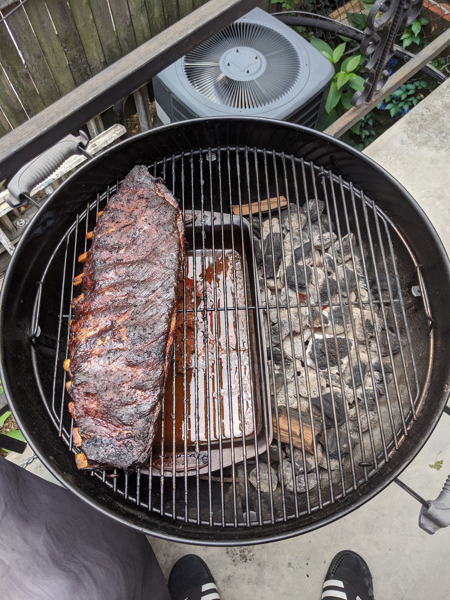

Delicous Smoked St Louis Style Ribs

Easy Weekend Summer Time Ribs
I made this 6 hour recipe last summer during covid while I was home all day for days at a time.
These ribs are perfect and fall off the bone when bitting into them. These ribs use a popular 3 2 1 method of cooking ribs.
Ingredients
- 1 rack of St Louis style ribs
- 4 Tbsp yellow mustard
- 1 cup of apple juice
- BBQ rub of choice(recommendation)
- Slow burning charcoal and Hickory wood chunks.
- BBQ sauce of choice
Steps
- Spread yellow mustard evenly over the ribs covering completely. Next, spread the dry rub over the ribs covering completely.
- Prepare your smoker according to manufacture's directions to a heat of 225 F degrees. Once up to temp and light smoke, add you hickory wood chunks.
On the opposite end of the coals, I recommend a pan with water and 1/2 a cup of apple juice to keep moister while smoking.
- Place ribs, bone side down, on the smoker and let smoke for 3 hours at 225 degrees F.
- Remove ribs from smoker after 3 hours, Lay tinfoil out on counter (enough to wrap ribs in) and lay the ribs on the foil. Mix 1/2 c. bbq sauce and 1/2 c.
apple juice together in small bowl. Pour it carefully over the ribs and seal up the foil so nothing leaks out.
Place ribs back in the smoker at 225 degrees F for 2 hours.
- After 2 hours has passed remove the ribs from the smoker. Remove the ribs from foil.
Coat ribs with BBQ sauce and place back on the smoker for 1 hour
- Enjoy!
Return to Mainpage